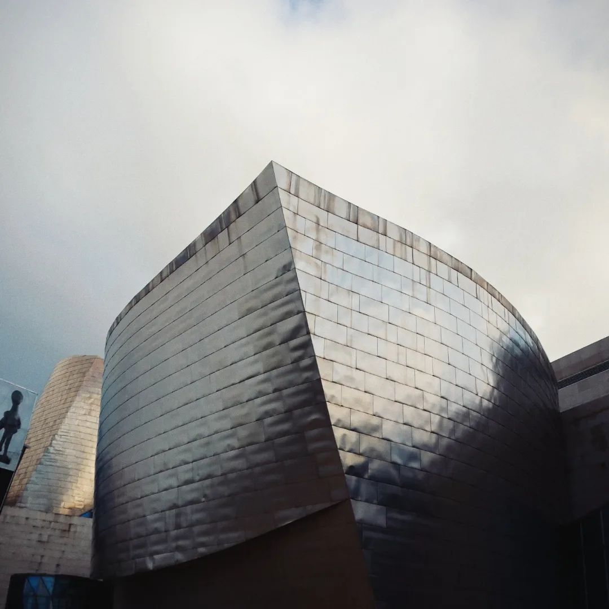
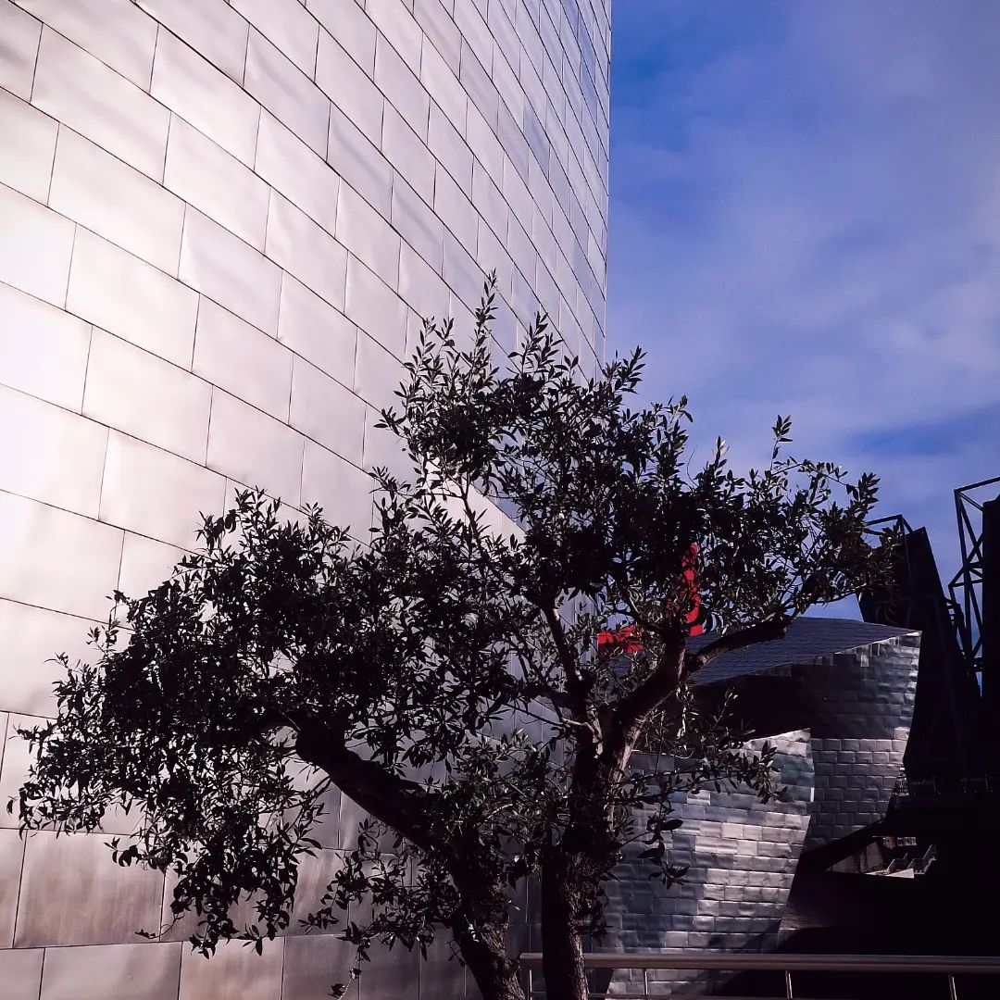
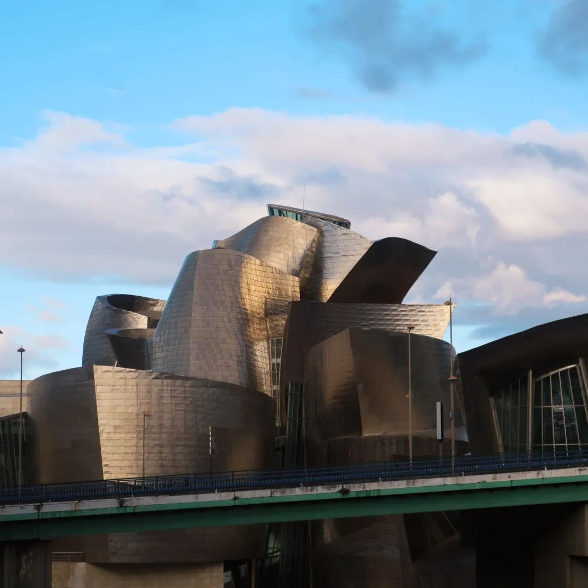
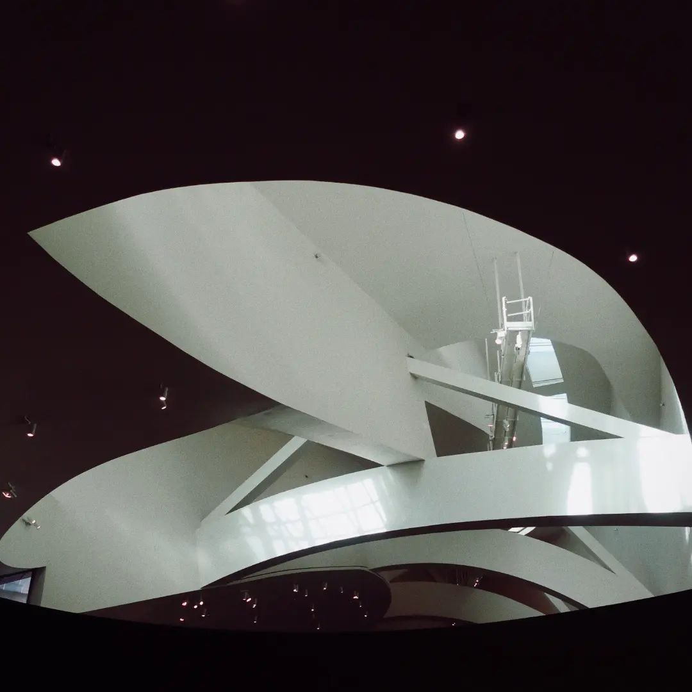
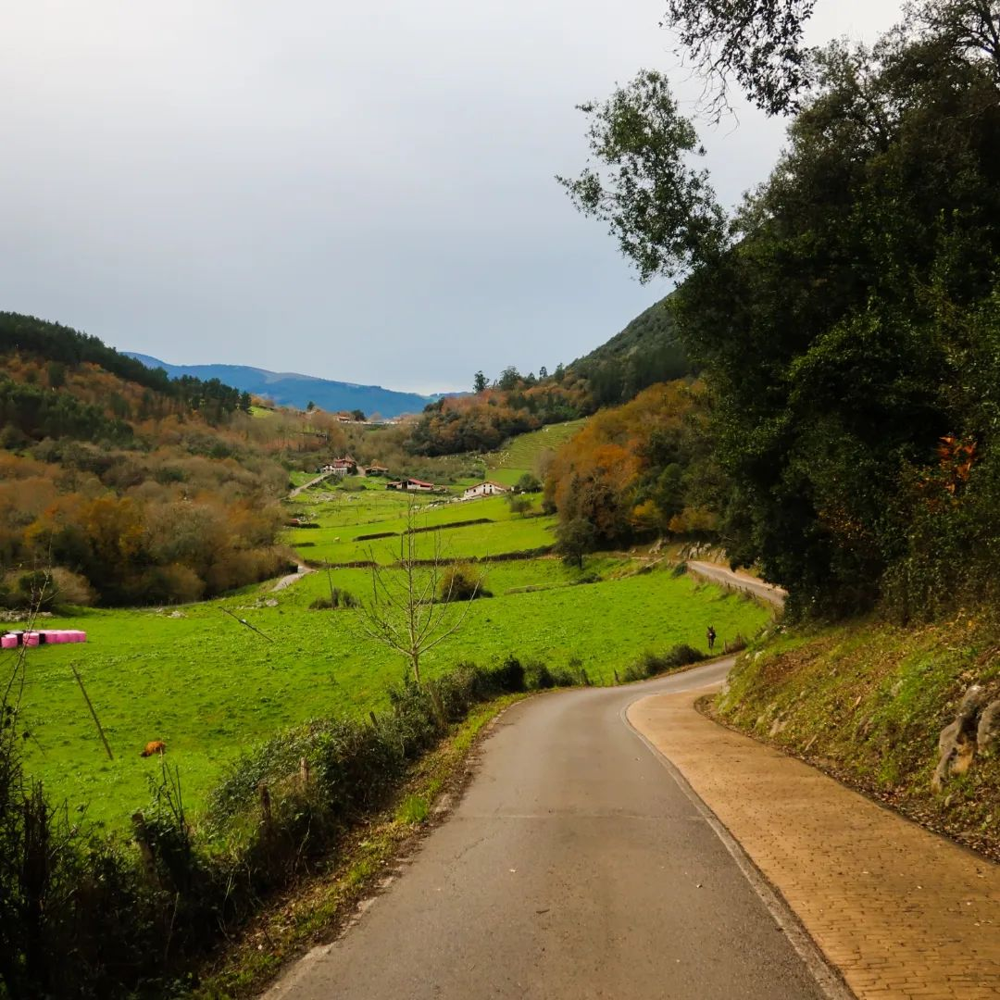
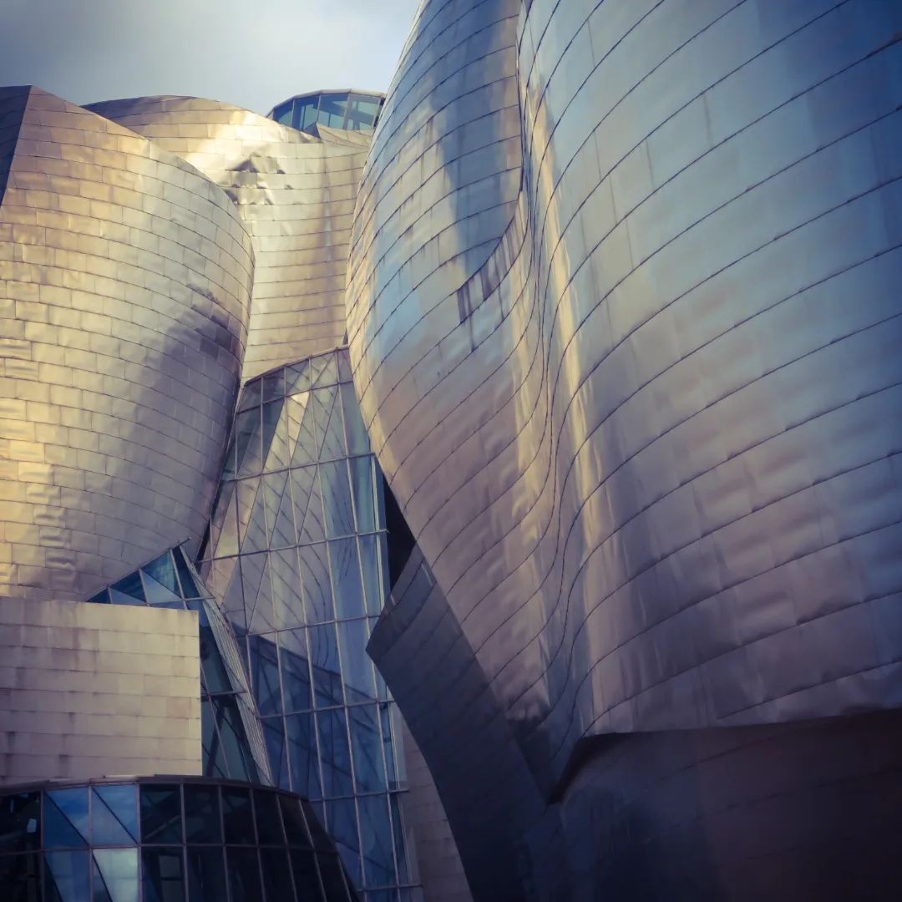
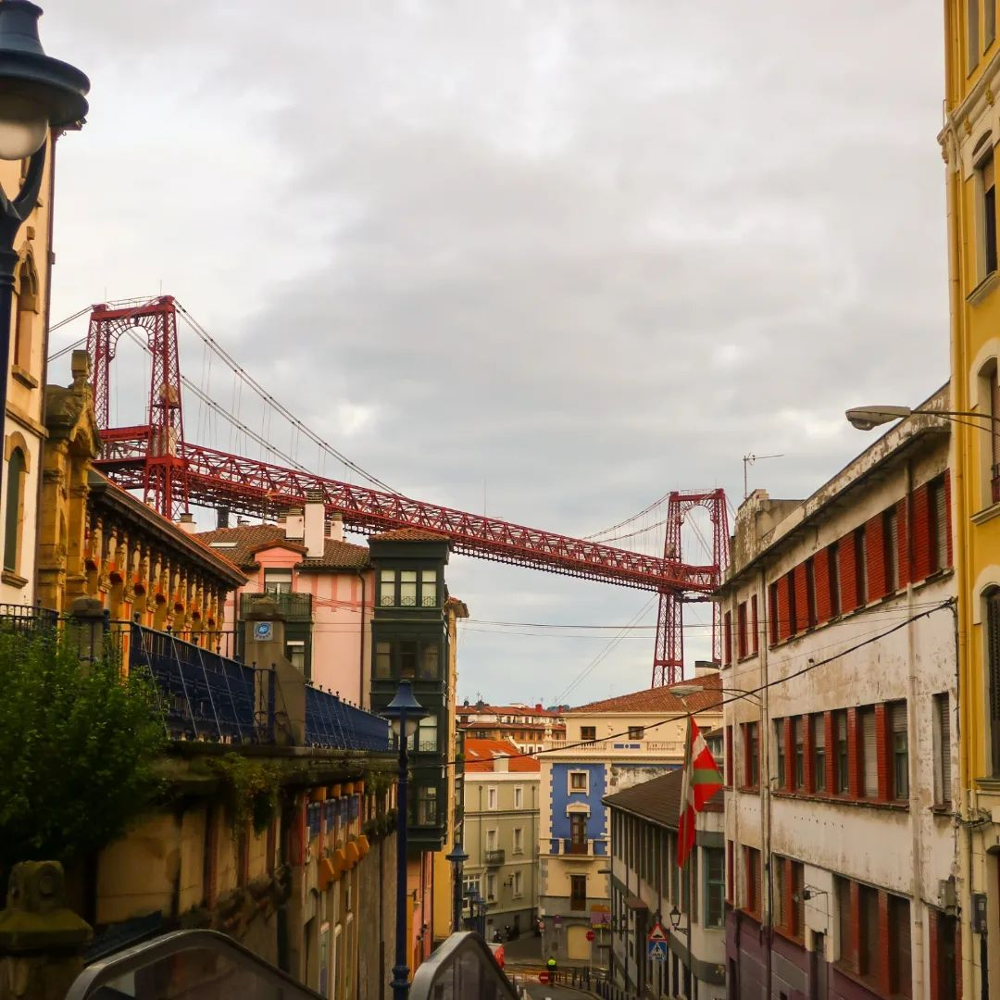
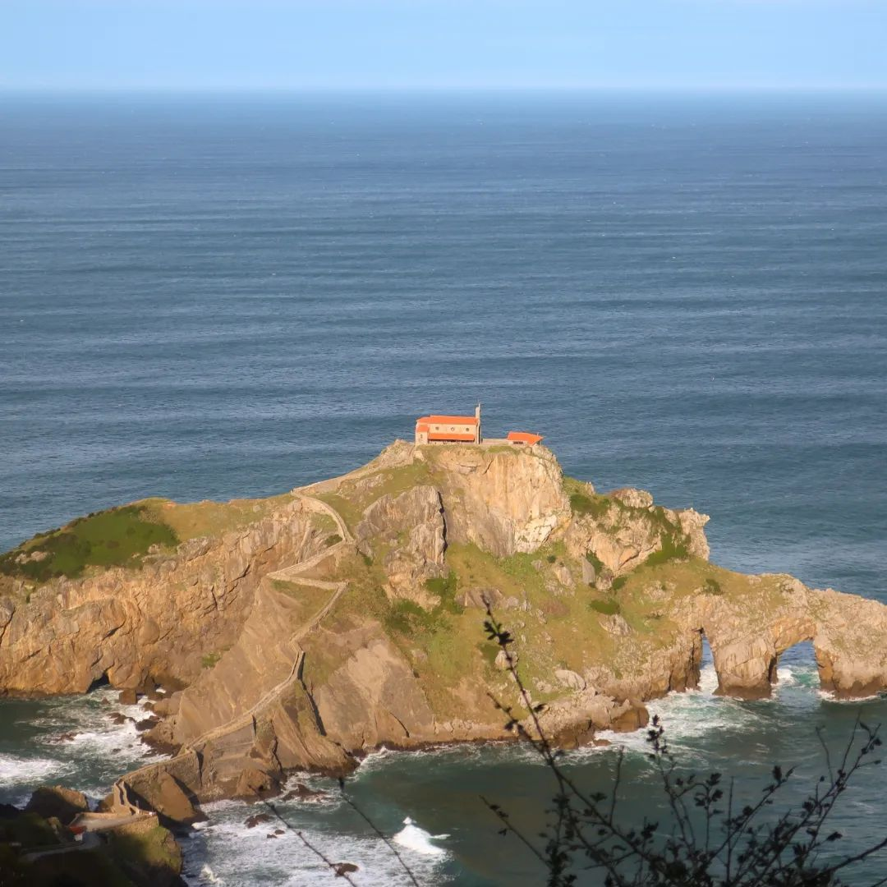

Exploring Bilbao: Our 3-Day Adventure in December 2023

In December 2023, we embarked on a delightful 3-day trip to Bilbao, discovering the vibrant city and its stunning surroundings. Our journey began in Bilbao, where we explored the historic old town, known as Casco Viejo, with its charming streets and bustling markets. A highlight of our visit was the iconic Guggenheim Museum, with its impressive modern art collection and striking architecture by Frank Gehry.
We also visited the picturesque S. Juan de Gaztelugatxe, a stunning islet with a hermitage perched atop, accessible via a dramatic stone bridge. The breathtaking views and the serene atmosphere of this unique location left a lasting impression.
Our exploration continued to the coastal town of Portugalete, where we marveled at the Vizcaya Bridge, a UNESCO World Heritage site and the world's oldest transporter bridge. The scenic views of the Nervion River from the bridge were truly spectacular.
On our final day, we ventured into the beautiful Basque countryside, enjoying the rolling hills, verdant landscapes, and charming villages. The serene beauty and cultural richness of the Basque region provided a perfect contrast to the urban energy of Bilbao.
This 3-day adventure through Bilbao and its surroundings offered a perfect blend of art, history, and natural beauty, providing unforgettable experiences at every turn. From the bustling streets of Bilbao to the stunning coastal scenery and the peaceful Basque countryside, this trip was truly a memorable journey.







 Bordeaux
Bordeaux
 Tallin & Riga Christmas Markets
Tallin & Riga Christmas Markets
 Barcelona, Vic & Girona
Barcelona, Vic & Girona
 Skopje, North Macedonia
Skopje, North Macedonia